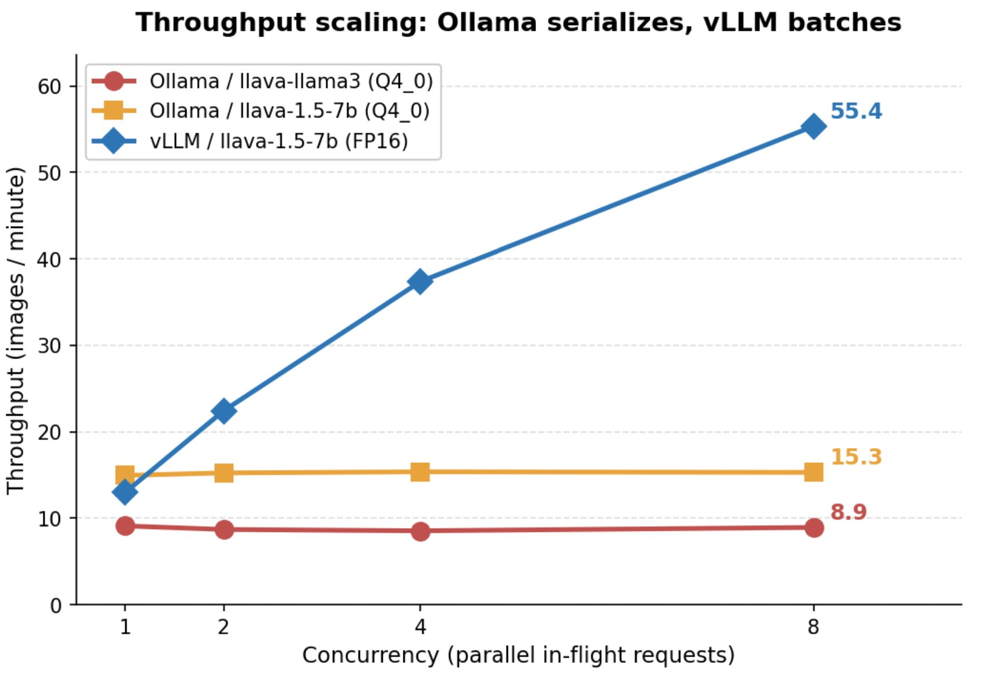
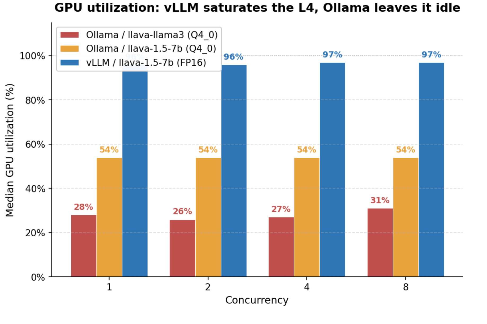
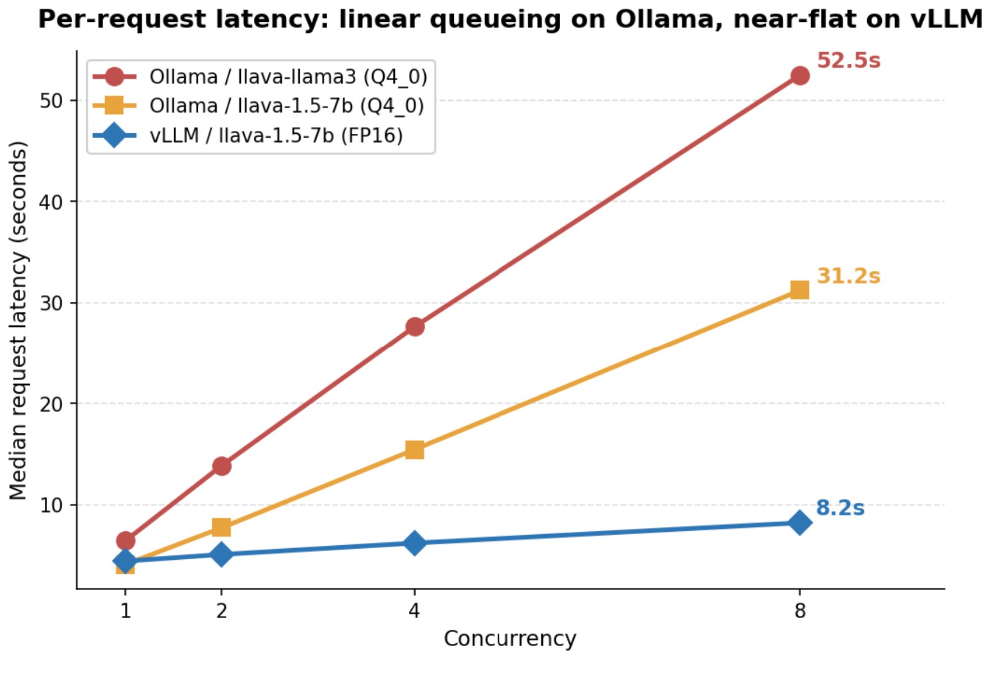
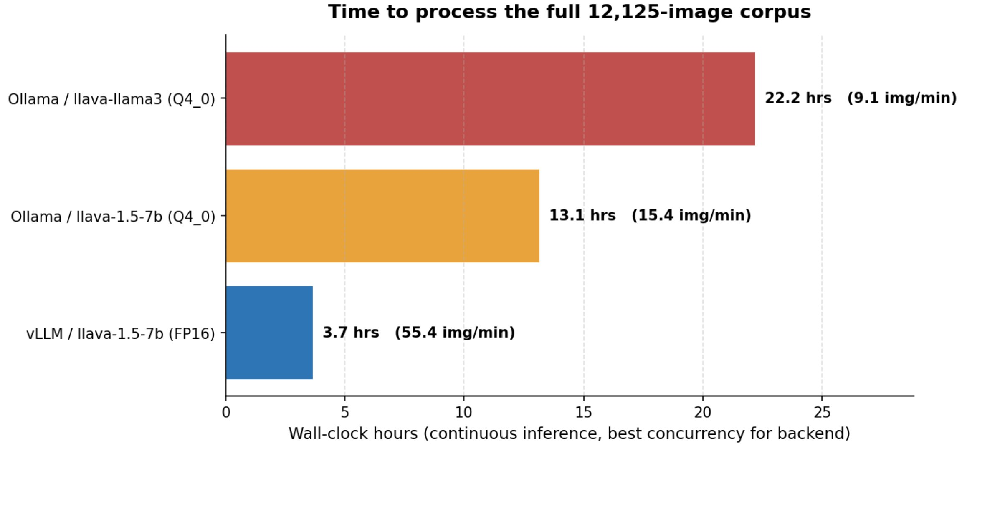

A controlled performance characterization of a production image-classification pipeline on a single NVIDIA L4 GPU. Diagnosing request serialization in Ollama, then migrating to vLLM continuous batching delivered a 6.22× throughput improvement on the same hardware and same model — taking a 12,125-image archival corpus from 22 hours to 3.7 hours.
A production LLaVA image-classification pipeline at the University of Illinois System was running at 9 images per minute on a dedicated NVIDIA L4 GPU. At that rate, the full 12,125-image archival corpus required roughly 22 hours per pass — a constraint on iteration speed for prompt design, taxonomy refinement, and any operational re-run.
The pipeline was using Ollama 0.3.14 to serve llava-llama3, called sequentially from a Python orchestrator. The question driving this work was: is the bottleneck the hardware, the model, or the serving stack? The answer dictates radically different responses — hardware upgrade, model substitution, or backend migration.
This case study documents the controlled benchmark methodology used to isolate the bottleneck and the engineering choices that recovered the unused capacity.
At production settings the L4 was at 28–31% GPU utilization with 6.1 GB of 23 GB VRAM in use — and pulling 27W of its 72W TDP. The hardware was idle the majority of the time. A faster GPU would not have helped.
Three controlled experiments were designed to separate three independent variables: prompt design (call structure, output schema), client concurrency (1 / 2 / 4 / 8 in-flight requests), and serving stack (Ollama vs vLLM with the same model class). Holding two variables fixed while sweeping the third isolates the cause of any observed difference.
Single dedicated L4 (no horizontal scaling option). On-prem environment with TLS-level block on HuggingFace (model artifacts pre-staged). Sole engineer. Production pipeline could not be paused during evaluation, requiring a parallel sandbox.
Three experiments were run against the same image corpus and recorded with sub-percent precision. Each experiment isolates one variable; the benchmark harness sampled GPU utilization, VRAM, and power at one-second intervals concurrently with the inference run so that throughput and resource numbers come from the same window of clock time, not separate runs averaged after the fact.
llava-llama3 serving on Ollama, ran the same 50-image batch at client concurrency C = 1, 2, 4, 8. Recorded p50/p95 latency, end-to-end throughput, GPU utilization, VRAM, and wall power for each setting. Set OLLAMA_NUM_PARALLEL=4 to rule out a default-config explanation.llava-1.5-7b in FP16. Repeated the C = 1, 2, 4, 8 sweep with the same image batch, the same prompt, and the same orchestrator code path. The only thing that changed between Experiment 2 and 3 was the inference server URL.llava:7b — the same architecture vLLM was serving. This isolates the serving architecture as the sole variable, confirming the speedup is not attributable to a model swap.The Ollama concurrency sweep produced a signature pattern: throughput stayed flat at ~9 images per minute across all concurrency levels while p50 latency inflated by 8.18× from C=1 to C=8. GPU utilization held at 28–31% throughout. VRAM was constant. Power was flat at 27W.
This is the unmistakable fingerprint of request serialization at the serving layer: the daemon was accepting concurrent connections but processing them one at a time, so additional in-flight requests simply queued and inflated latency without producing any extra throughput. The hardware was never the bottleneck.


An L4 with 23 GB VRAM running a 7B-parameter multimodal model can look reasonable at 9 img/min if you only look at end-to-end throughput. Without sampling utilization concurrently, an operator could spend a quarter on a faster GPU and recover none of the unused capacity, because the bottleneck is not on the GPU at all.
Re-running Ollama with the same model architecture vLLM was serving (llava:7b) produced 15.3 img/min — flat across concurrency, 54% GPU. A 3.6× delta versus vLLM on identical model + identical hardware isolates the serving stack as the cause.
vLLM 0.6.6 implements continuous batching: at each forward pass the scheduler can swap completed sequences out and queued sequences in, keeping the GPU saturated regardless of which token any given request is currently emitting. For a workload with variable-length outputs and many in-flight requests — exactly the shape of this image-classification pipeline — this is the right serving primitive.
With vLLM as the serving stack and no other change, throughput scaled cleanly with concurrency: 13.0 → 22.4 → 37.4 → 55.4 images per minute at C = 1, 2, 4, 8. GPU utilization rose to 96–97%. VRAM moved into the 19–20 GB range — the GPU was finally being used as intended. Wall power climbed to 71–72W, indicating real computational work rather than idle wait.
At C=8 the speedup over the original production configuration is 6.22×; the same-model speedup (eliminating any model-family contribution) is 3.6×. The 3.6× is the pure serving-architecture effect; the additional 1.7× comes from running a model that better fits the L4's compute profile.
| Backend / Model | C=1 | C=8 | GPU% | VRAM |
|---|---|---|---|---|
| Ollama llava-llama3 | 9.1 | 8.9 | 28–31% | 6.1 GB |
| Ollama llava:7b | 14.9 | 15.3 | 54% | 5.2 GB |
| vLLM llava-1.5-7b | 13.0 | 55.4 | 96–97% | 19–20 GB |


llava-llama3 to llava-1.5-7b, which fits the L4 better.
The methodology choices that made the diagnosis possible are as important as the result itself. The relevant principles, in order of impact:
llava:7b on Ollama vs llava-1.5-7b on vLLM, same architecture) decomposes the result into attributable components: 3.6× from serving stack, 1.7× from model fit.